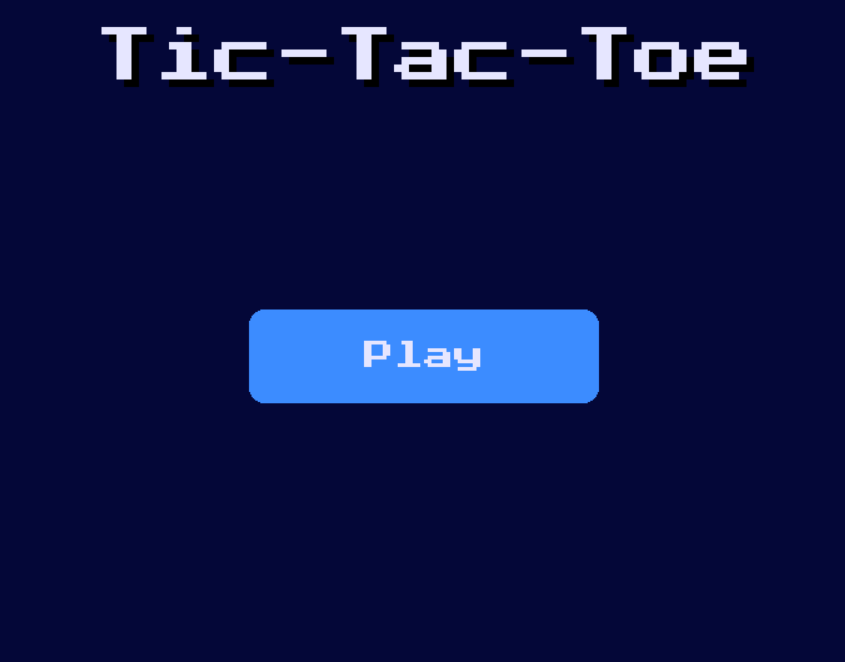
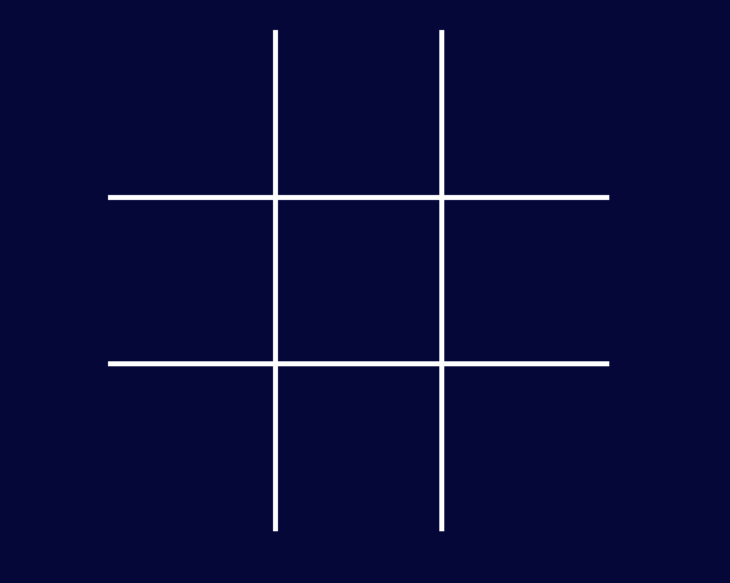
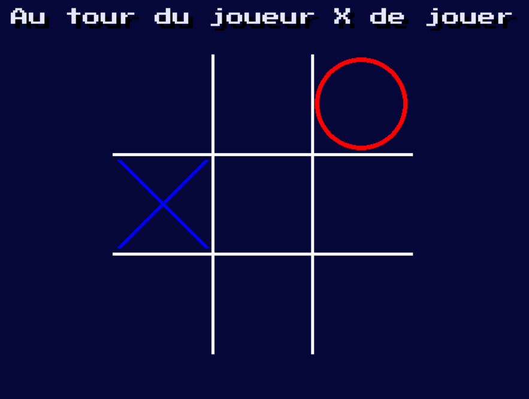
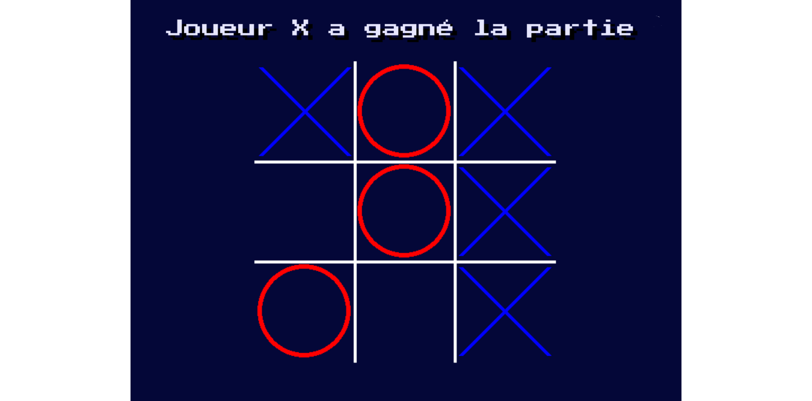
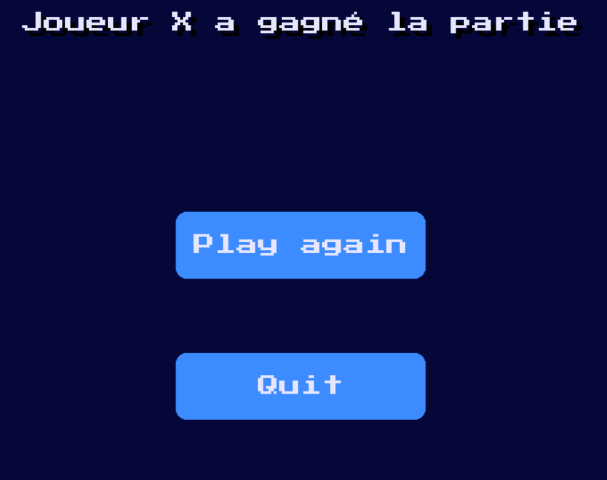

Premier menu qui s'affiche au lancement du jeu. Création d'un objet Button nommé "Play" qui permet de lancer une partie.

Développement d'une fonction qui dessine la grille du morpion.

Création d'une fonction permettant d'afficher un symbole "O" ou "X" dans la case sélectionnée par le joueur.

Implémentation d'une fonction qui à partir de la représentation binaire de la grille détermine l'état de la partie.

Ecran de fin de partie affichant le résultat en haut de l'écran, accompagné de 2 boutons interactifs qui permettent soit de rejouer une partie "Play again" soit de fermer l'application "Quit".